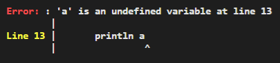

Variable
-
A Variable is a reference to a block of memory containing any one of the literals: either Number, String, Boolean, Null, Function, or Array.
-
The block of memory is dynamically allocated and deallocated automatically using both the stack and heap.
-
Variable names can only contain numbers, alphabets, and the underscore
_. Also, names cannot begin with a number.
Reserved keywords
class,super, andthisare reserved for a future version of Ari which includes classes, so they are forbidden.
Declaration¶
- The
letkeyword indicates the declaration of a new variable. -
Declaration syntax must consist of:
-
letkeyword - variable's name
- equal symbol,
= - initial value of the variable
1 2
let a = 1; println a; // 1 -
-
We can redeclare the same variable as many times as we like.
1 2 3 4 5 6
let a = 1; println a; // 1 let a = 2; println a; // 2 let a = 3; println a; // 3
Assignment¶
-
letis only used to declare a new Variable. Exclude it to mutate or change the value of an existing Variable:1 2 3
let a = 1; a = 2; // Assign value 2 to a println a; // 2
Always declare variables first before assigning values
1 2 3 | |
- Next, we try changing
atobin Line 1. - Line 2 results in an error because
ais an undeclared variable. The program halts with the error below:

Block scoping and shadowing¶
- The space inside a pair of curly braces,
{...}, has a new "inner scope", which is something like a fresh new environment. -
Scopes can be created and nested as many times as we like:
1 2 3 4 5 6 7 8 9 10
// Outer scope { // 1st inner scope { // 2nd inner scope { // 3rd inner scope } } }
-
Variables declared inside an inner scope can access variables from outer scopes.
1 2 3 4 5 6 7 8 9 10 11
let a = 2; { { let b = 5; { { println a + b; // 7 } } } }
- Variables declared inside an inner scope shadows the outer scopes' variables of the same name.
- Shadowing is temporarily using a new representation/value of a variable. Once the inner scope ends, the previous/original/old value of the outer scope is restored to the variable.
- Again, this only occurs when the inner and outer variables share the same name.
To understand this better, let us deconstruct the program below line by line
1 2 3 4 5 6 7 8 9 10 11 12 13 | |
- Line 1 declares a variable
awith a value of 1 in the global scope. - Line 5 declares
awith a value of 2 in the outer scope. This value shadows the global scope's value ofa. - Line 8 declares
awith a value of 3 in the inner scope. This value shadows the outer scope's value ofa. - The printed values follow the order of
1 2 3.
Beware of scoping pitfalls
1 2 3 4 5 6 7 8 9 10 11 12 13 | |
- Next, we try commenting out Line 2.
- Line 13 results in an error because
ais only declared in the outer and inner scope, not the global scope. The program halts with the error below:

Thought bubble
1 2 3 4 5 6 7 8 9 10 11 12 13 14 15 16 17 18 19 | |
- Ari's outputs are shown in the highlighted comments.
- Do you agree with the output? Let me know if you disagree.